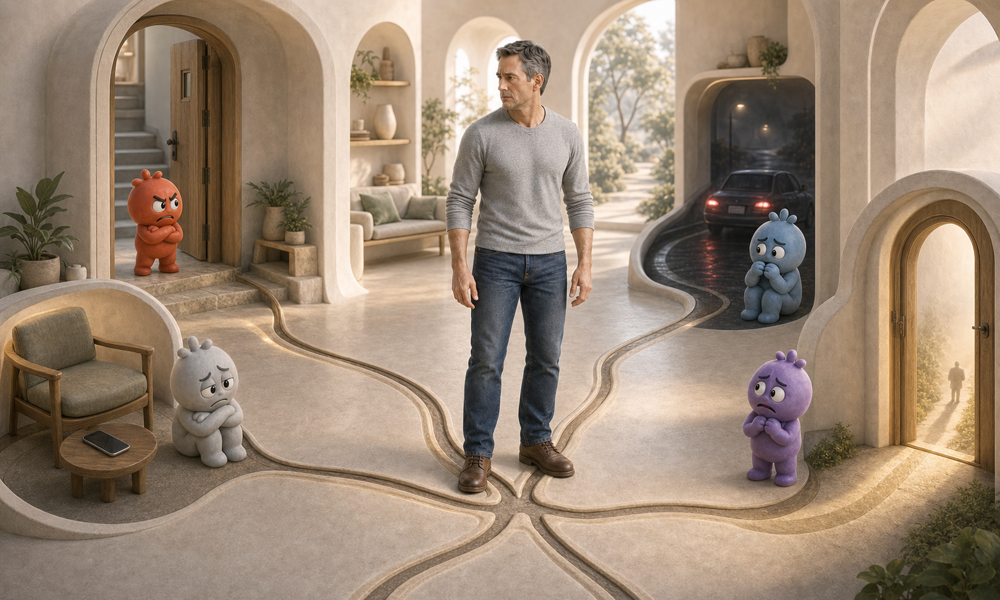
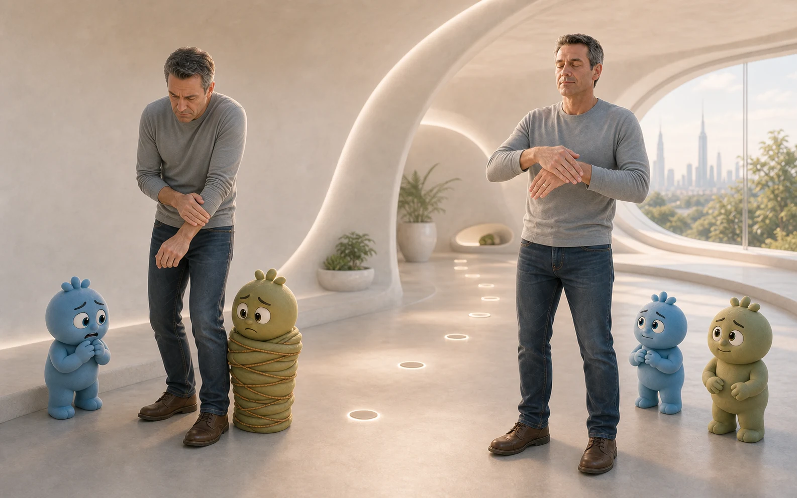
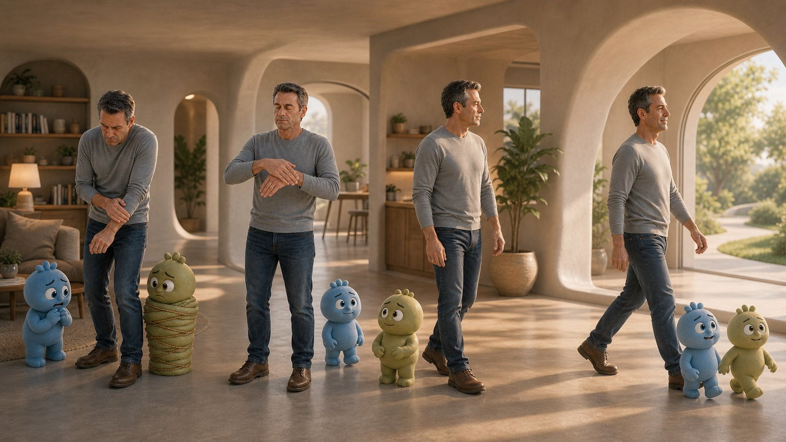
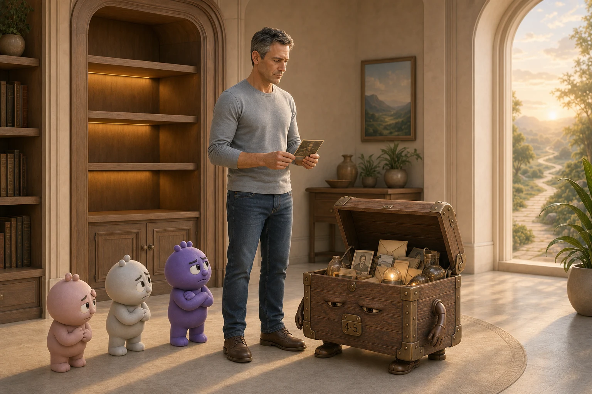
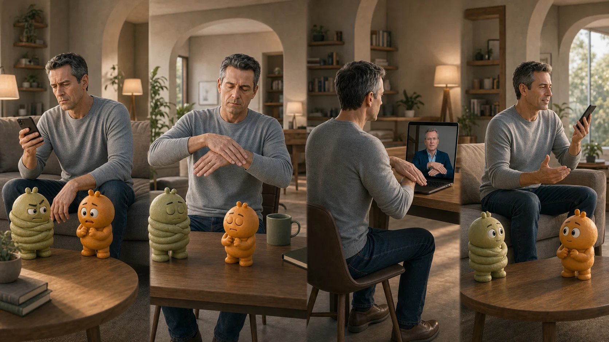
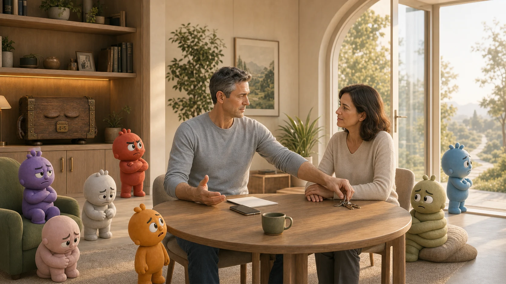

Плохие воспоминания
- разговор закончился, а вы ещё несколько часов продолжаете его в голове;
- ошибка давно исправлена, а вина всё ещё забирает силы;
- место, звук или фраза мгновенно возвращают прежний удар.

Off-Switch с Угисом12-недельная групповая программа остановки автоматических реакций
Когда прошлый разговор, старая ошибка или страх будущего включают реакцию быстрее вас, она забирает сон, голос, границы и способность действовать. За 12 недель вы учитесь останавливать её и возвращать себе спокойствие в реальных ситуациях.
Главная трансформация.
Прошлое остаётся в прошлом.Ключевая проблема
Поэтому тревога, напряжение, гнев или обида возникают уже в сегодняшних разговорах, решениях и отношениях.
Реакция редко остаётся в одной ситуации: она постепенно забирает сон, близость, ясность решений и силы на жизнь.
Почему нужны 12 недель
Одну причину тревоги можно ослабить, а она вернётся через другой сюжет. Гнев уходит в тело, граница сменяется виной, страх будущего маскируется под осторожность. В группе вы вместе с Угисом видите одну связанную систему и распутываете её в правильном порядке.

Выбираем то, что сильнее всего мешает жить сегодня.
Находим связанные воспоминания, страхи и ситуации.
Система перестаёт менять форму и возвращать вас в старый круг.
На чём строится работа
Вы вспоминаете ситуацию, слышите имя или принимаете решение, и тело больше не захватывает управление раньше вас.

Фраза, образ или воспоминание запускают привычное напряжение и старое действие.
Сигнал остаётся, но реакция становится тише: вы слышите себя, сохраняете границы и действуете по текущей ситуации.
Метод остановки автоматической реакции Off-Switch помогает разорвать автоматическую связь между триггером и реакцией: мысль остаётся мыслью, а ситуация перестаёт управлять вашим телом и действием.
Угис показывает технику, наблюдает, как она работает в вашей ситуации, и помогает выбрать следующий эпизод, после которого меняется вся связанная цепочка.
Вспомнить её и оценить силу реакции от 0 до 5.
Повторить за Угисом показанную последовательность движений рук.
Снова подумать о ней и ещё раз оценить реакцию от 0 до 5.
Если реакция осталась и состояние устойчиво, повторять цикл, пока оценка не станет нулевой. Если стало тяжелее, остановиться и разобрать это с Угисом.
Что будем делать за 12 недель

Впервые почувствовать: сильную реакцию можно остановить, а не только терпеть.
Система перестаёт постоянно находиться в ожидании угрозы.
Тяжёлые эпизоды теряют заряд, а будущие сценарии перестают заранее запускать реакцию.
Спать, разговаривать, ставить границы и принимать решения без управления старой системы.
Это общий порядок. Если группе на какой-то теме нужно больше времени, Угис меняет темп.

Один из главных результатов
Воспоминание остаётся частью вашей истории. Тело различает прошлое и сегодняшний разговор, поездку, отношения или решение.
Как создаётся скорость изменений
На встрече вы выбираете точный фокус, между встречами проверяете его в жизни, а следующая корректировка начинается с того, что действительно изменилось.
Угис показывает следующий шаг работы и задаёт точный фокус недели.
Вы применяете технику по теме недели и закрепляете порядок действий.
В жизни становится видно, что уже изменилось и где реакция ещё включается.
На следующей встрече Угис уточняет маршрут и выбирает вместе с вами следующий шаг.

Между встречами
Встреча запускает цикл: вы применяете технику Off-Switch в реальных ситуациях, замечаете, как меняется ответ тела, и приносите на следующую встречу то, где ещё нужна помощь. На эту интеграцию стоит выделять 30–60 минут в день.
Выбрать ситуацию или реакцию по теме недели.
Оценить изменение и заметить его в обычной жизни.
Отметить, где реакция ещё включается, и принести это на встречу.
Так техника Off-Switch постепенно становится вашим самостоятельным навыком.
Что входит в маршрут
За 12 недель вы не просто снижаете одну реакцию. Вы проходите связанную систему прошлого, страхов будущего и текущих жизненных ситуаций и учитесь продолжать работу самостоятельно.
Чем помогает группа
Чужой пример помогает увидеть собственную реакцию со стороны, а Угис связывает общее узнавание с вашей конкретной ситуацией.
Полёты снова становятся возможны
 Угис Страусс
Угис Страусс
Кто ведёт маршрут
Угис лично ведёт группу, помогает выбрать следующий эпизод и проверяет результат в реальной жизни.
Что показали предыдущие онлайн-группы
В большом онлайн-проекте зарегистрировались более 7 000 человек. Среди участников, которые прошли программу до конца и заполнили повторный замер, общая нагрузка снижалась на 42–60%.
Человек снова садится за руль, выдерживает сложный разговор, засыпает после тяжёлого дня, возвращается к работе и планам, которые месяцами откладывал.
Полевые данные основаны на самооценке участников, которые завершили программу и заполнили повторный замер.
Видеоотзывы
Спокойно ответить человеку, заснуть после сложного дня, сесть за руль, принять решение без недельного внутреннего суда. Именно так изменения становятся видны в жизни.
Страх перестаёт блокировать следующий шаг
Возвращение к обычной жизни после панических атак
Меньше напряжения, больше планов на будущее
Восстановление после развода
Эмоции больше не останавливают действие
Письменные отзывы
Темы у участников разные, а общий результат похож: реакция занимает меньше места, возвращаются силы, планы, сон и желание действовать.
«Я поняла, что не могла двигаться вперёд последние 10 лет именно из-за ситуаций в прошлом. На занятиях выяснилось, что они всё ещё влияли на меня. Теперь их можно достать, прочувствовать и лишить отрицательного заряда».
Виктория
«Ушло чувство беспомощности; я планирую своё будущее и не боюсь его, а радуюсь новым возможностям».
Инна
«Разница между самостоятельной работой и работой в группе проявилась очень чётко. Появился ресурс: силы, желание и намерение после занятий».
Ирина
«Весь вулкан эмоций потух. Я быстро вернулась к нормальной жизни, появились новые идеи и силы для возможного разрешения ситуации».
Ирина
«У меня получилось справиться с очень глубокими детскими травмами и обидами, которые тянули на дно и не давали жить полной жизнью».
Дарья
«Появился конкретный план, и я уже начала его реализовывать. Будущее уже не кажется безрадостным».
Светлана
Отзывы передают личный опыт участников; результаты зависят от ситуации и практики человека.
Подойдёт ли вам группа
Работа строится на ситуациях, которые происходят сейчас. Вы приходите с живой задачей и начинаете менять её с первой недели.
Перед заявкой
Нет. Можно назвать тему общими словами и оценивать реакцию по шкале от 0 до 5, подробности рассказывать не обязательно. Если во время личной работы с Угисом вы не хотите, чтобы фрагмент остался в записи, запись этого фрагмента остановят.
Да. В общей части Угис помогает каждому освоить практику, а затем личной работы становится больше. Подробный ритм описан выше, в блоке «Как устроена встреча».
Запись появляется на портале и остаётся доступной один год. Вы смотрите встречу и продолжаете практику в общем ритме.
После первой встречи стоит планировать около 30 минут в день, после второй — около часа. Угис помогает выбрать конкретный объём и фокус недели.
Off-Switch — обучающий формат, а не психотерапия. Здесь вы осваиваете практику, которую потом можете применять самостоятельно к реакции, возникающей сейчас. Метод не ставит диагнозов и не заменяет медицинскую или психотерапевтическую помощь, если она нужна.
Нет. В Off-Switch используется своя последовательность положений и движений рук, которую человек выполняет самостоятельно. В EMDR и EFT используются другие приёмы. Общее у подходов одно: внимание направлено не только на мысли, но и на саму реакцию.
Команда сообщает календарь ближайшего потока, правила участия и текущий статус набора. Затем проходит короткая беседа о вашей задаче, после которой вы принимаете решение об оплате.
Главный результат маршрута
За 12 недель прошлое занимает своё место, а вы возвращаете себе спокойствие без эмоционального онемения, ясные границы без вины и способность действовать, когда это важно.

Граница применения: при остром кризисе, угрозе безопасности или новых необъяснимых симптомах сначала нужна профильная медицинская или кризисная помощь.